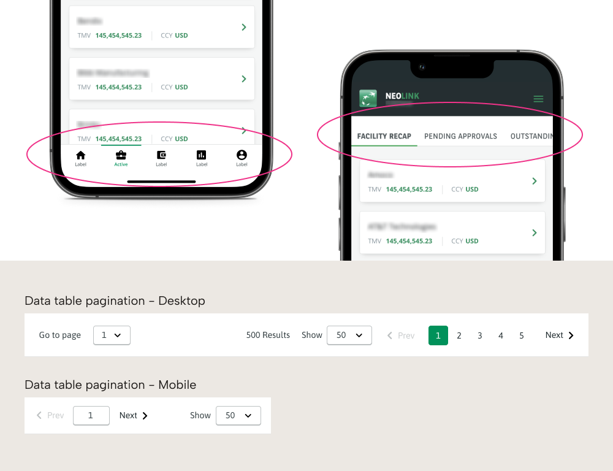
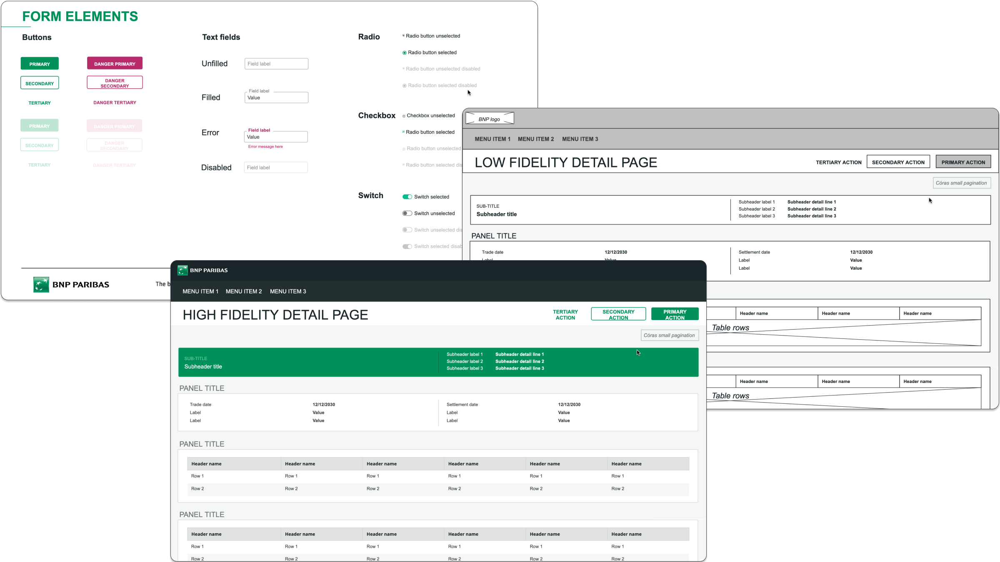
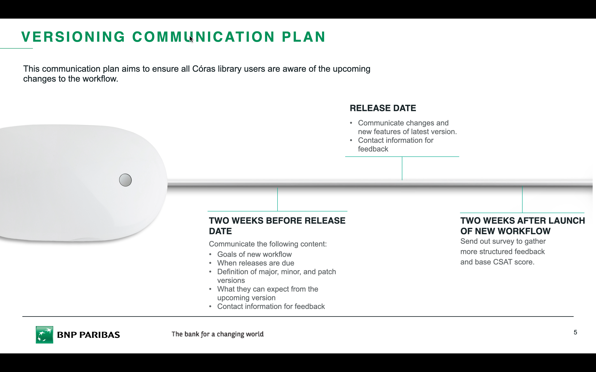
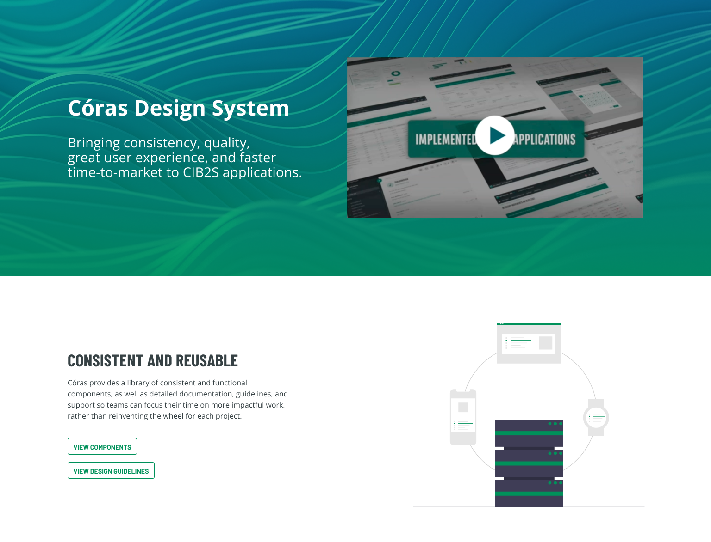
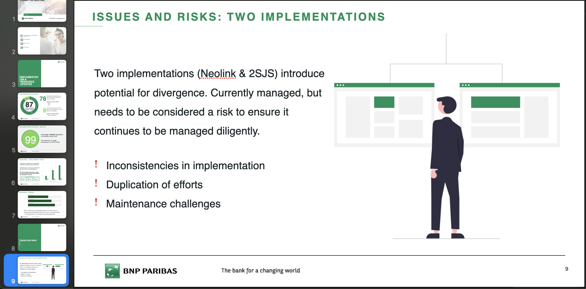
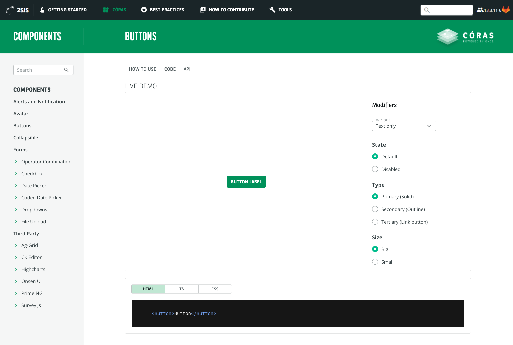

Background
Inheriting a system and making it scale.
I had been using Córas as a product designer for a year before taking on sole design responsibility for the system. Inheriting a framework managed by several people over two years, I found solid governance foundations already in place but gaps in versioning, documentation, and component consistency that needed addressing.
This meant working closely with the two development teams, one building for Neolink, the global client portal, and one for transversal applications, to ensure design decisions translated accurately into the products teams relied on every day.
She was the UX Designer and her positive attitude to listen and also to advise were the main reasons for the project to be successful. She was also a very good communicator when it comes to explain UX choices.
Olivier Tran, Tech Lead, BNP Paribas Neolink Development Team
Craft
Filling the gaps, component by component.
Data Visualisation Guidelines
BNP Paribas products are heavily data-driven, but without shared standards, chart types were inconsistent and the existing data color palette was being misapplied across teams. I introduced data visualization guidelines covering chart selection based on the story the data needs to tell, and correct application of the existing palette , giving product teams a shared standard to work from.

Data visualization guidelines, consistent standards for chart selection and data storytelling across BNP Paribas Securities Services products.
Mobile Components
Córas had been built primarily for desktop. As product teams began building for mobile, I designed the first mobile components for the system: bottom navigation, carousel interactions, scrollable tabs, and data table pagination.
Rather than treating mobile as a separate concern, I designed the pagination component responsively, a single component that adapts its interaction model between desktop and mobile. The components were approved for development.

Responsive pagination , a single component designed to adapt its interaction model across desktop and mobile.
Wireframing Toolkit
A Córas study revealed that business analysts lacked access to specialist design tools and were struggling to communicate their ideas visually. I developed a wireframing toolkit in PowerPoint with wireframing principles, page templates, and a library of grab-and-go shapes aligned with Córas' visual language.
By meeting non-designers where they already were, I extended the design system's reach beyond the design team.

Wireframing toolkit, empowering non-designers to communicate ideas using tools already available to them.
Operations
The work behind the work, running a system at scale.
Versioning
The component library I inherited had no versioning system; the file name stayed the same regardless of what changed, making it impossible for teams to know what had been updated or when. I introduced semantic versioning based on major, minor, and patch criteria, and developed a communication plan to support adoption across both development teams.

Contribution Process
New and updated components entered Córas through a structured pipeline, reviewed in fortnightly management meetings with both development teams and stakeholders. I facilitated these sessions end-to-end, taking each proposal from idea to fully considered design, raising development tickets, reviewing implementation, and communicating updates post-release.
I managed over 40 component proposals through this full cycle.

Contribution process , sole design owner at every stage, from proposal through to production and post-release communication.
Communication Strategy
Working with the Tech Lead, we maintained multiple channels to keep teams informed, the design system portal, MS Teams community, Jira board, and a monthly newsletter. I co-produced and edited the newsletter, covering component updates, upcoming releases, and interviews with developers and product teams on how they used Córas in practice.

Escalating Structural Risk
I led quarterly steering committee meetings with senior stakeholders including the Head of Data and Digital, Head of Neolink, and Product Heads, covering budget, implementation updates, and issues and risks.
One risk I identified and escalated consistently: two separate development teams were implementing Córas independently, creating real potential for inconsistency, duplicated effort, and long-term maintenance problems across 100+ applications. Resolving it would require significant organisational change. I documented it, framed it clearly, and raised it at every Steer Co, ensuring a systemic design risk stayed visible at the right level of the organisation, not buried in a backlog.

Quarterly Steer Co, keeping senior stakeholders aligned on budget, implementation updates, and issues and risks.
Live Demo
The portal previously displayed all component variations on a single page, overwhelming for developers trying to find what they needed. I proposed and led the integration of an interactive demo feature, defining all modifiers, attributes, and values for each component so developers could configure exactly what they needed and access the corresponding code directly.

Interactive demo, modifiers panel with live preview and direct code access.
Outcome
From 35 to 53 transversal applications , and a system reaching maturity.
The decrease in support and bug tickets alongside growing adoption signals a design system reaching maturity. Teams were becoming more confident using Córas independently, shifting their focus from fixing problems to improving the system.